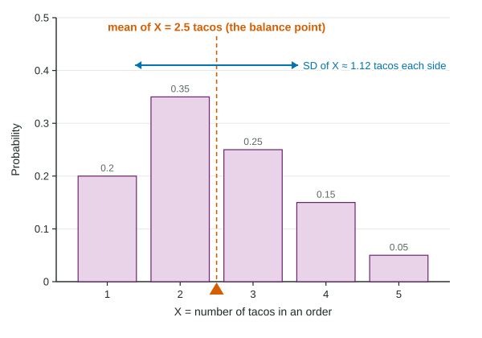

In Unit 1 you summarized a data set with its mean and standard deviation. A probability distribution can be summarized the same way. The only change is that values are weighted by their probabilities instead of counted equally. These two numbers, the mean and standard deviation of a random variable, describe what happens in the long run.
The mean, or expected value
Let X = the number of tacos in a randomly chosen order at a food truck.
| 1 | 2 | 3 | 4 | 5 | |
|---|---|---|---|---|---|
| 0.20 | 0.35 | 0.25 | 0.15 | 0.05 |
Imagine 100 typical orders: about 20 have 1 taco, 35 have 2, 25 have 3, 15 have 4 and 5 have 5. The total is
Worked example 1. Find the mean of X.
Structure: .
Substitute:
Answer: tacos. Interpretation: over many orders, the average number of tacos per order is about 2.5.
Three things to notice. The mean is not the plain average of 1 to 5 (that would be 3): small orders are more likely, so they pull the mean down. The mean need not be a possible value: no order contains 2.5 tacos. And it is a long-run statement: it does not predict the next order.

Picture the probability histogram as a seesaw with weights on it. The mean is where it balances, as in the figure.
The standard deviation
The standard deviation of X measures how far its values typically fall from the mean. Weight each squared distance from the mean by its probability, add, and take the square root:
Worked example 2. Find the standard deviation of X.
Structure:
Substitute:
Answer: tacos. Interpretation: the number of tacos in an order typically differs from the mean of 2.5 by about 1.12 tacos.
The number inside the square root, 1.25, is the variance. Forgetting the square root is a common slip; the standard deviation is in tacos, the same units as X. Unlike a sample's standard deviation, there is no here: the probabilities already are the weights.
Expected gain in games and insurance
Expected value is how fundraisers, casinos and insurers plan. A school game costs $2. It pays $10 with probability 0.10 and $5 with probability 0.15. Let W = a player's net gain: $8, $3 or −$2.
Interpretation: if many people play, players lose an average of about 25 cents per play, so the school raises about $0.25 per play in the long run, roughly $100 over 400 plays. A game is fair when the expected net gain is 0.
Common slips
| Slip | Fix |
|---|---|
| Averaging the values, | weight each value by its probability |
| Averaging the probabilities | the probabilities alone always add to 1; multiply by the values |
| Reporting the variance as the SD | take the square root |
| Prizes instead of net gains | subtract the cost from every prize, including the $0 prize |
| Only the answer, no expression | write with every number substituted |
Comparing spreads works as with data: two random variables with the same mean can have very different standard deviations. Values farther from the mean, with the same probabilities, mean a larger .